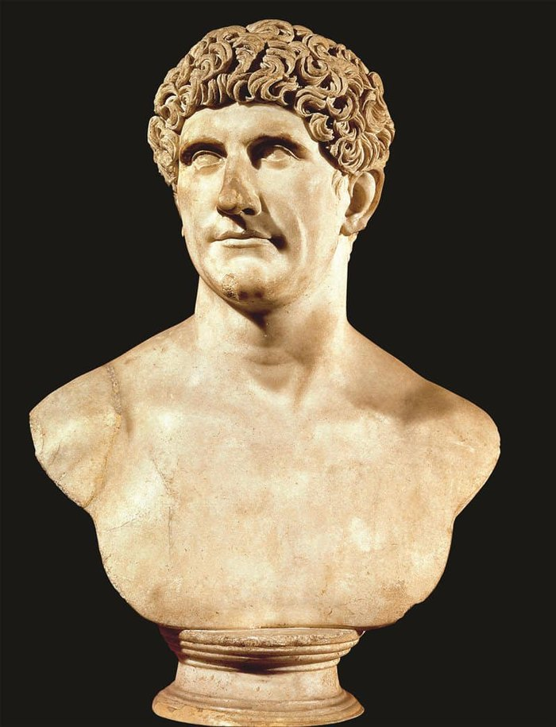
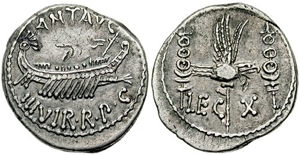
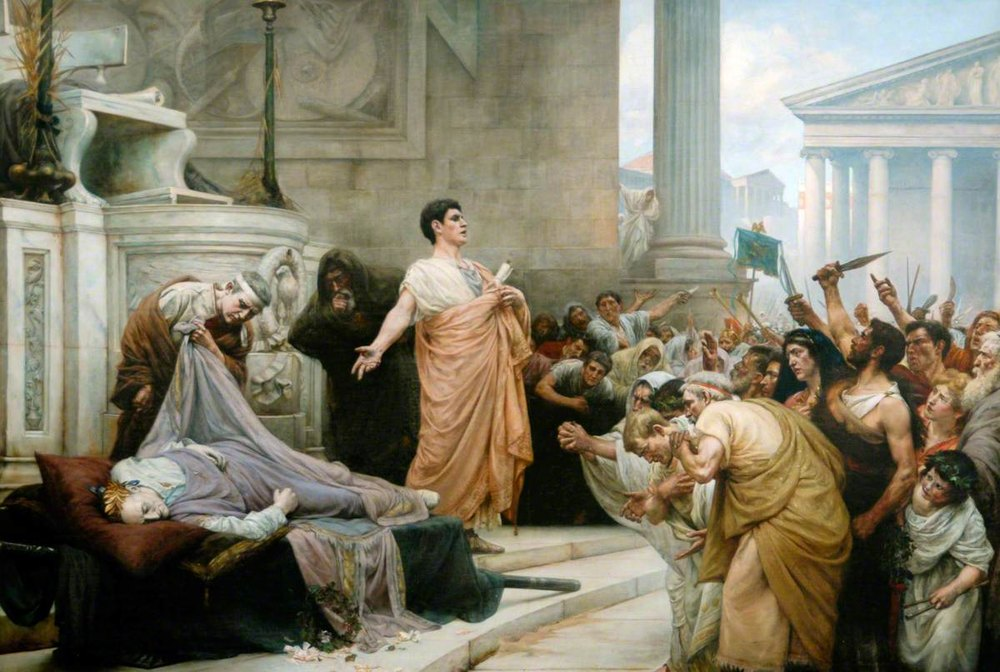
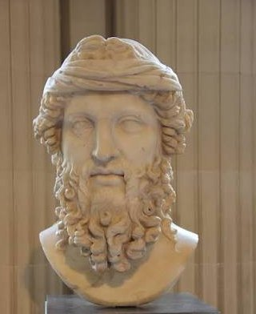
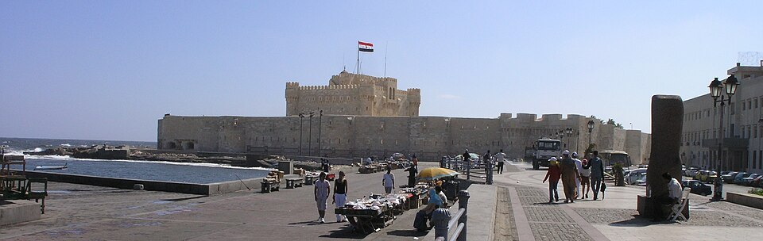
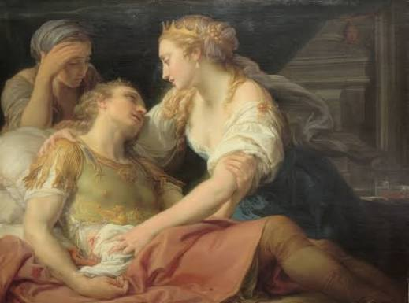

Geçen hafta bu köşede Kleopatra'nın hikâyesini anlatırken şunu söylemiştim: onu bize anlatan kaynakların çoğu düşmanlarının kalemindendir. Antonius için de aynı şey geçerlidir, bir farkla. Kleopatra'yı yabancı bir tehdit olarak resmetmek Roma'nın işine geliyordu. Antonius'u ise Roma kendi içinden silmek zorunda kaldı. Bu yüzden ona biçilen rol bir düşman değil, bir uyarı oldu: büyük bir adamın nasıl kaybedilebileceğinin hikâyesi.
Oysa kendi çağında Antonius, Roma'nın en sevilen adamlarından biriydi.
Ailesi soyunu Herakles'in oğlu Anton'a dayandırırdı ve Antonius bu efsaneyi üzerinde taşımayı severdi. Plutarkhos onun görünüşünü neredeyse bir heykel tarifi gibi anlatır: geniş bir alın, kemerli bir burun, gür sakal. Kıyafeti de iddiayı destekliyordu. Belinden kuşaklı kısa bir tunik, yanında ağır bir kılıç ve kaba bir pelerin giyerdi.
Askerleri onu bu yüzden severdi. Onlarla aynı sofrada yer, ayakta yemek yer, şakalaşırdı. Zor zamanlarda, örneğin ordusunun açlıkla ve soğukla boğuştuğu geri çekilmelerde, askerlerin gözünde komutanlıktan çok bir yoldaş gibi durduğu için sadakat kazanırdı. Roma tarihinde askerleri tarafından bu kadar içten sevilen az komutan vardır.
Antonius'un yükselişi tümüyle Julius Caesar'a bağlılığı sayesinde oldu. Caesar'ın en güvendiği komutanlarından biriydi; iç savaş sırasında İtalya'yı ona bıraktı, süvari komutanı olarak Roma'yı yönetti, birlikte konsül oldular.
MÖ 44'te Caesar Senato'da öldürüldüğünde, suikastçılar Antonius'u da öldürmeyi tartışmış ama vazgeçmişlerdi. Bu, hayatlarının hatasıydı. Antonius cenaze töreninde yaptığı konuşmayla Roma halkını suikastçılara karşı ayaklandırdı. Kalabalık meşalelerle sokaklara döküldü ve katiller şehirden kaçmak zorunda kaldı.

Antonius bir konuşmayla bir kentin yönünü değiştirebilen türden bir adamdı.

Philippi'de Caesar'ın katilleri yenildikten sonra Roma dünyası paylaşıldı ve Antonius'un payına Doğu düştü. MÖ 41'de Efes'e girdiğinde şehir onu bir komutan gibi değil, bir tanrı gibi karşıladı. Kadınlar Bakkha rahibeleri, erkekler ve çocuklar satirler kılığındaydı. Sokaklar sarmaşıklarla, flüt ve lir sesleriyle doluydu ve halk ona “Neşe Veren Dionysos” diye sesleniyordu.
Plutarkhos burada önemli bir not düşer: el konulan mallar ve ağır vergiler yüzünden aynı şehrin bir kısmı için o, Dionysos'un öteki yüzüydü, yani vahşi ve yırtıcı olanı.
Aynı yıl, aynı şehirde, Artemis Tapınağı'na sığınmış genç bir prenses tapınağın merdivenlerinde öldürüldü: Kleopatra'nın kız kardeşi IV. Arsinoe. Emri Antonius verdi. Kimin istediğini de kaynaklar açıkça yazar.
Antonius'un İskenderiye yıllarını anlatan en iyi hikâye, büyük siyasi kararlarda değil, bir mutfakta geçer.
Plutarkhos, büyükbabasının Amphissalı doktor Philotas'tan dinlediklerini aktarır. Philotas o sırada İskenderiye'de tıp öğrencisidir ve saray aşçılarından biriyle tanışır. Aşçı onu mutfağı görmeye götürür. Philotas aynı anda kızartılan sekiz yaban domuzunu görünce şaşırır ve kalabalık bir davet olduğunu düşünür. Aşçı güler: davetli sayısı on iki kişi kadardır.
Sorun sayı değil, zamanlamadır. Antonius belki şimdi yemek isteyecektir, belki biraz sonra, belki bir kadeh şarap isteyip sohbete dalacak ve yemeği erteleyecektir. Yemeğin tam kıvamında olması gerektiği için mutfak, her an hazır olacak şekilde arka arkaya birden fazla sofra pişirir.
Bu hikâyede Antonius'un bütün karakteri var: cömertliği, savurganlığı, düşüncesizliği ve etrafındaki dünyanın onun keyfine göre dönmesi.
Plutarkhos aynı yıllardan bir alışkanlığı daha aktarır. Antonius ile Kleopatra geceleri hizmetçi kılığına girip İskenderiye sokaklarında dolaşır, kapıları çalar, insanlarla takılırlardı. Antonius bu gezilerden çoğu zaman ağır azarlar işiterek, hatta bazen dayak yiyerek dönerdi. Kılık değiştirmesine rağmen pek çok kişi onun kim olduğunu tahmin ediyordu.
İskenderiyeliler bu şakalardan hoşlanıyordu. Aralarında dolaşan bir söz vardı: Antonius trajedilerini Romalılara oynuyor, komedilerini ise kendilerine ayırıyordu.
Bu iki cümle, Roma'nın Antonius'a neden bu kadar öfkelendiğini de açıklıyor. Roma'nın üç hâkiminden biri, imparatorluğun doğu yarısını yönetirken geceleri sokaklarda şaka yapıyordu.
MÖ 31'de Actium açıklarında Octavianus'la giriştiği deniz savaşı her şeyi bitirdi. Donanmanın önemli bir kısmı kuşatma altında kalınca Kleopatra gemileriyle çemberi yararak çekildi, Antonius da onun peşinden gitti. Kendi ordusunu geride bırakan bir komutan, Roma'nın affetmeyeceği tek şeyi yapmıştı.
Plutarkhos'un bu bölümdeki en çarpıcı ayrıntısı bir savaş sahnesi değil, bir sessizliktir. Antonius kaçış gemisine bindikten sonra geminin pupasına oturur ve üç gün boyunca orada, tek başına, kimseyle konuşmadan kalır. Plutarkhos bunun nedeninden emin değildir: Kleopatra'ya kızgın mıdır, yoksa yüzüne bakmaya utanıyor mudur? Üçüncü günün sonunda kraliçenin kadınları ikisini konuşmaya, sonra da birlikte yemeye ikna eder.
Mısır'a döndüğünde Antonius artık başka bir adamdı. Şehirden ve dostlarından uzaklaştı; Pharos yakınlarında denizi doldurarak oluşturduğu küçük bir toprak yığınının üstüne, suların ortasında kendine bir ev yaptırdı.
Burada insanlardan uzak bir sürgün hayatı yaşadı ve artık Atinalı Timon gibi yaşamak istediğini söyledi. Timon, komedyalarda insan düşmanı olarak alay konusu edilen ünlü bir kişilikti. Antonius kendini ona benzetmesinin nedenini açıkça söylüyordu: en yakın arkadaşları tarafından aldatılmış, nankörlük görmüştü. Bu yüzden eve Timonium adını verdi.

Sonu da başlangıcı kadar Antonius'a yakışır. Bir süre sonra Timonium'u bırakıp saraya döndü. Kleopatra onu kabul etti ve şehir yeniden şölenlere boğuldu. O günlerde Caesarion'un ve kendi oğlu Antyllus'un erginlik törenleri yapıldı, İskenderiyeliler günlerce yiyip içti.
Aynı günlerde çift, eski dostluk topluluklarını, “Taklidi İmkânsız Yaşayanlar”ı dağıttı ve yerine yenisini kurdu. Yeni topluluğun adı “Birlikte Ölenler”di ve üyeler adlarını tam olarak bunun için yazdırıyordu.
MÖ 30 yazında Octavianus'un ordusu İskenderiye'ye dayandı. Son akşam yemeğinde Antonius hizmetçilerine bol bol şarap ve yemek verilmesini söyledi, çünkü ertesi gün belki başka bir efendiye hizmet ediyor olacaklardı. Arkadaşlarının ağladığını görünce, onları zafer beklediği bir savaşa değil, kendisi için onurlu bir ölüm beklediği bir savaşa götürmeyeceğini söyledi.
Plutarkhos o gecenin ilerleyen saatlerini şöyle anlatır: gece yarısına doğru, şehir korkuyla susmuşken, ansızın çeşitli çalgılardan gelen sesler ve bir kalabalığın çığlıkları duyuldu. Sanki büyük bir Dionysos alayı, bütün gürültüsüyle şehrin ortasından geçip düşmana en yakın kapıya doğru ilerliyordu. Sesler kapıda en yüksek noktasına ulaştı ve birden kesildi. Bunu yorumlayanlar, Antonius'un hayatı boyunca kendisini benzettiği tanrının onu terk ettiğini söylediler.
Ertesi sabah donanması ve süvarileri Octavianus'a geçti.
Kleopatra'nın öldüğü haberi geldiğinde Antonius odasına çekildi ve zırhını çıkardı. Yıllar önce, gerekirse kendisini öldürmesi için Eros adında bir uşaktan söz almıştı. Şimdi ondan sözünü tutmasını istedi.
Eros kılıcını çekti, kaldırdı, sonra birden döndü ve kendini öldürdü. Antonius'un ayaklarının dibine yığıldığında Antonius ona, yapmaya cesaret edemediği şeyin nasıl yapılacağını kendisine öğrettiğini söyledi ve kılıcını karnına sapladı.
Ama hemen ölmedi. Kan dinince kendine geldi ve çevresindekilere son darbeyi vurmaları için yalvardı; hepsi odadan kaçtı. Kleopatra'nın hayatta olduğunu öğrenince, kendisini anıt mezara götürmelerini istedi.

Kraliçe kapıyı açmadı, çünkü mezar mühürlüydü ve açarsa ele geçebilirdi. Bunun yerine bir pencereden sicimler ve halatlar sarkıttı. Antonius'u bunlara bağladılar ve Kleopatra iki kadınıyla birlikte onu yukarı çekti. Plutarkhos orada bulunanların bundan daha acıklı bir manzara görmediklerini söylediklerini yazar: her yanı kan içindeki adam, havada asılı dururken bile ellerini kraliçeye uzatıyordu. Aşağıdaki kalabalık bağırarak Kleopatra'ya cesaret veriyordu.
Onu yukarı çekip yere yatırdığında kraliçe kendi giysilerini parçaladı, yüzünü onun yaralarından akan kana buladı ve ona efendim, kocam, imparatorum diye seslendi.
Antonius'un hikâyesi bir aşk hikâyesi olarak anlatılır, oysa bir kayıp hikâyesidir. Roma'nın en popüler adamı, on yıl içinde vatan haini ilan edildi. Bunu yapan propaganda o kadar başarılı oldu ki bugün bile Antonius'u kendi kararlarıyla değil, bir kadına duyduğu tutkuyla açıklama eğilimindeyiz. Oysa Doğu'da kendi imparatorluğunu kurmak, Roma'yı iki merkezli bir dünyaya dönüştürmek gibi bir siyasi hayali vardı ve bu hayal Octavianus'un hayaliyle aynı odaya sığmıyordu.
Bir de şu var. Antik dünya, insanların tanrıları taklit ettiğine inanıyordu. Antonius bunu ömrü boyunca yaptı. Plutarkhos'un anlattığı o gece, kentten çıkan müziğin nereye gittiğini yazmaz. Sadece çıktığını söyler.
Gelecek hafta bu köşede Dr. M. Castellane ile birlikte, iki hikâyenin kesiştiği noktayı yazacağız: Kydnos Irmağı'ndaki o gemi.